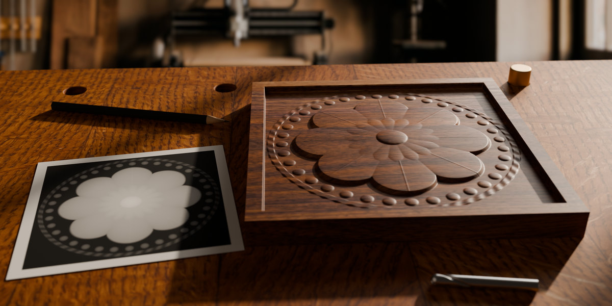
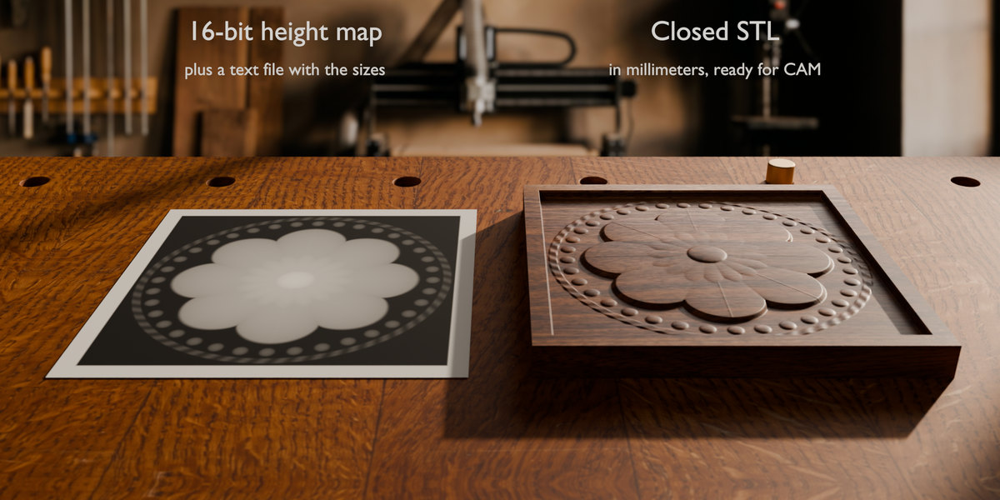
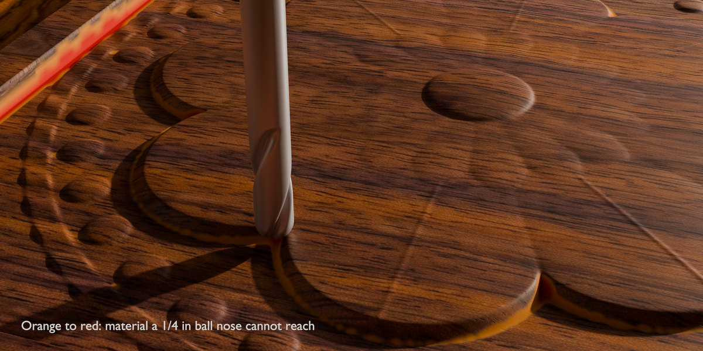
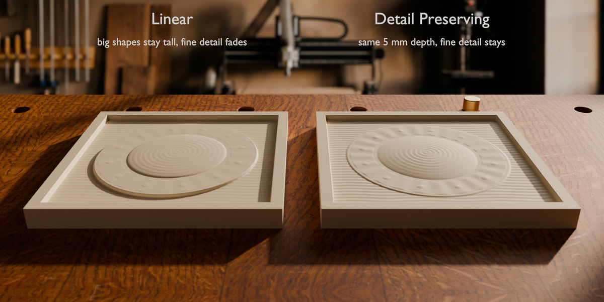

Carvable
Turns an image or height map into an exact bas-relief for CNC carving and 3D printing: sizes in millimetres, draft angles for tapered bits, a check of what your router bit can really carve, a closed STL and a 16-bit height map for your CAM program.
- Exact millimetres. Plate width, height, relief depth, stock thickness and base are entered in mm; the STL has exactly the size you asked for.
- Draft angle for tapered bits. No wall is steeper than the angle you set (default 10° from vertical). Material is added at the foot of steep walls; tops are never lowered.
- Tool check. Pick a tapered ball nose, ball nose, flat end mill or V-bit and its size. The preview colours every spot the bit cannot reach and reports the uncut thickness. Export as Carved writes the surface the bit will actually leave.
- Depth compression with detail kept. Linear by default; a gradient-domain mode (after Weyrich et al., SIGGRAPH 2007) squeezes deep scenes while fine texture survives.
- 16-bit everywhere. 16-bit PNG and TIFF and 32-bit EXR are read without colour management, so every level of a height map is kept. 8-bit stepping is smoothed away.
- Outputs for CAM. A closed (watertight) STL in millimetres and a 16-bit PNG height map with a dimensions file for Vectric, Carveco, PixelCNC and others.
| Plate | 200 mm, 5 mm relief in 18 mm stock |
|---|---|
| Frame | 10 mm, flush with the top |
| Draft angle | 10° from vertical |
| Default bit | tapered ball nose, 0.79 mm (1/32″) tip, 5.4° per side |
| Live preview | ≈ 0.5 s per change (1200 × 1200 px image) |
| Export, 200 mm at 10 px/mm | ≈ 1 s, 0.2 GB memory |
| Export, 600 mm at 10 px/mm | ≈ 7 s, 1.7 GB memory |
| Automated tests | 84, on Blender 4.5.14 LTS and 5.2.2 LTS |
| Network | none: no license server, no telemetry |




Product Camera (working title)
Camera moves for product videos that frame the product by themselves. You choose a shot from a library of 14 (orbit, push-in, crane, detail pass, dolly zoom and more); the add-on computes the camera for every frame so the product sits inside the safe zone of each format, clear of the Reels and TikTok interface, whether it is a 2 cm ring or a 4.5 m car. A quality check lists any frame where something hides the product or the camera enters an object.


How our add-ons are made
The code is written with an AI coding assistant (Claude by Anthropic), working to specifications written and approved by Larklock. Larklock chooses what to build and for whom, sets the goals and limits, reviews the results and makes the product decisions: scope, price, name and which camera shots go into the library. Every feature is covered by automated tests on Blender 4.5 and 5.2. The add-ons themselves contain no AI and work offline. The product images and the demo film are rendered in Blender from Carvable’s own output; only the wood colours (walnut, oak bench) and the out-of-focus workshop behind them come from images generated with Google’s image model.